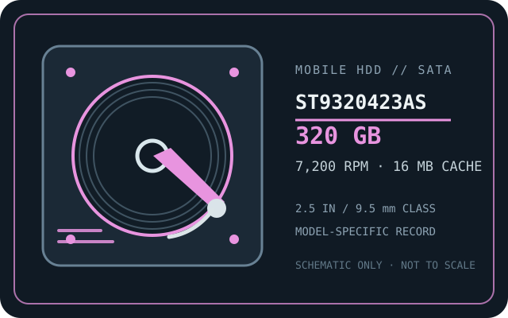

[ IDENTIFIED HDD // MODEL-SPECIFIC RECORD ]
Seagate Momentus 7200.4 ST9320423AS
320 GB; 2.5-inch mobile drive; SATA 3 Gb/s. This entry is limited to the complete model number shown here. Verify the label and firmware; similar family names are not interchangeable.

IDENTIFICATION: Record the full model suffix, serial number and firmware from the nameplate. Capacity or connector fit alone does not confirm an exact replacement or compatible sector presentation.
Recorded specifications
| Exact model / series | Seagate Momentus 7200.4 ST9320423AS |
|---|---|
| Formatted capacity | 320 GB (manufacturer nominal decimal capacity) |
| Form factor / height | 2.5-inch / 9.5 mm |
| Interface | Serial ATA, 3 Gb/s (SATA 2.0 generation; compatible operation depends on host negotiation and firmware) |
| Rotation / cache | 7,200 RPM / 16 MB buffer |
| Logical sector format | 512-byte logical sectors (512 B/sector); physical-sector reporting should be verified from the drive IDENTIFY data. |
| Recording technology | Manufacturer family documentation identifies perpendicular magnetic recording (PMR). The cited material does not establish the condition or exact head/media revision of any individual unit; do not infer SMR behavior. |
| Reliability note | Manufacturer family endurance/error figures are design-population ratings, not a prediction of this unit’s remaining life or a warranty of data integrity. SMART cannot guarantee future operation; keep verified independent backups. |
Host compatibility and handling caveats
- Use a host/controller that supports SATA devices and the drive’s 3 Gb/s link (lower SATA generations may negotiate a slower link); this is not a PATA/IDE device. The usual SATA data and power plugs do not supply laptop-specific mounting hardware.
- Check the system’s 2.5-inch bay and 9.5 mm clearance, 5 V supply, BIOS/UEFI capacity support, cable/bridge behavior and boot support. Older BIOSes, USB bridges or recovery tools may misreport capacity or sector geometry.
- The documented 512-byte logical sector size is not proof of every unit’s physical-sector reporting or firmware state. Query ATA IDENTIFY and the host’s sector view before cloning, repartitioning, RAID use, or installing an operating system.
- Do not treat a nominal 3 Gb/s link rate as sustained disk throughput. Sustained transfer varies by zone, condition, workload and host.
- If the disk clicks, disappears, spins down unexpectedly or returns read errors, stop unnecessary power cycles and writes. Preserve acquisition details; image read-only where safe and use a qualified recovery specialist if data is important.
Manufacturer sources
- Seagate Momentus 7200.4 SATA Product Manual, Rev. CManufacturer product manual for the 7200.4 family; verify the exact model in the model table. Confirm model suffix and document revision against the drive label.
- Seagate Momentus 7200.4 Data SheetManufacturer family data sheet for 2.5-inch models and performance specifications. Use the exact model’s row rather than assuming every family feature applies to every variant.
Specifications are transcribed from the cited Seagate family-level documentation. Confirm the individual label and firmware before service or data migration.